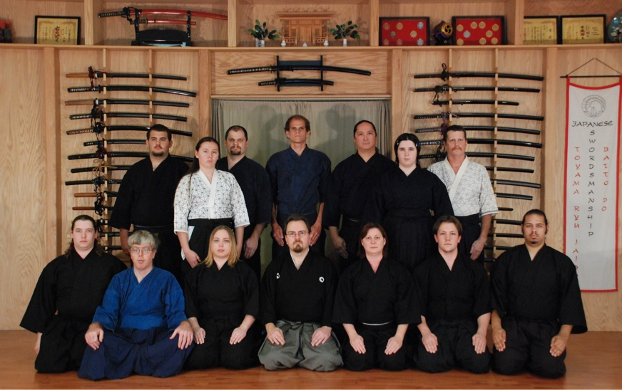
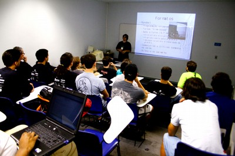
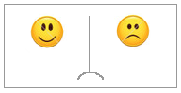

Segundo o http://codingdojo.org/: “Um Coding Dojo é um encontro onde um grupo de programadores se reúne para trabalhar em conjunto em um desafio de programação. Eles estão lá para se divertir, e, através de uma metodologia pragmática, melhorar suas habilidades de programação e de trabalho em grupo.”
Esta técnica ou forma de trabalho foi extraída da forma de treinamento que remete as artes marciais. A palavra dojô vem do local onde as lutas são praticadas de forma repetiva até a exaustão, sempre fazendo pequenas melhorias a cada repetição.
Programadores não treinam! Está uma grande verdade que já foi dita por várias pessoas na área de desenvolvimento de sistemas. O aperfeiçoamento das técnicas assim como o aumento da qualidade de um código fonte está ligada diretamente ao nível de experiência de um desenvolvedor. Ao longo do seu tempo de profissão o desenvolvedor vai aperfeiçoando as suas técnicas de forma restrita aos projetos os quais o mesmo atua.
Desta forma o dojo surge como um encontro entre programadores que se reunem para treinar e aperfeiçoar as suas técnicas de programação a partir de um problema proposto de forma divertida e colaborativa. Apesar do desafio o objetivo final não é de finalizar o problema, afinal não estamos interessados em entregar nenhum projeto tradicionalmente falando.
O treino deve reunir pessoas para resolver um problema simples de programação em conjunto, usando apenas um computador ligado a um projetor. Duas pessoas (piloto/copiloto) começam a resolver o desafio enquanto os outros assistem e participam apenas tirando suas dúvidas. Periodicamente, piloto deixa o computador para dar lugar a outra pessoa, enquanto o co-piloto toma seu lugar. [Fonte: Dojo Floripa]
No final de uma sessão de coding dojo, deve ser reservado um espaço de 10 a 30 minutos para realizar a retrospectiva. Cada pessoa deve contribuir com as respostas para as seguintes perguntas
